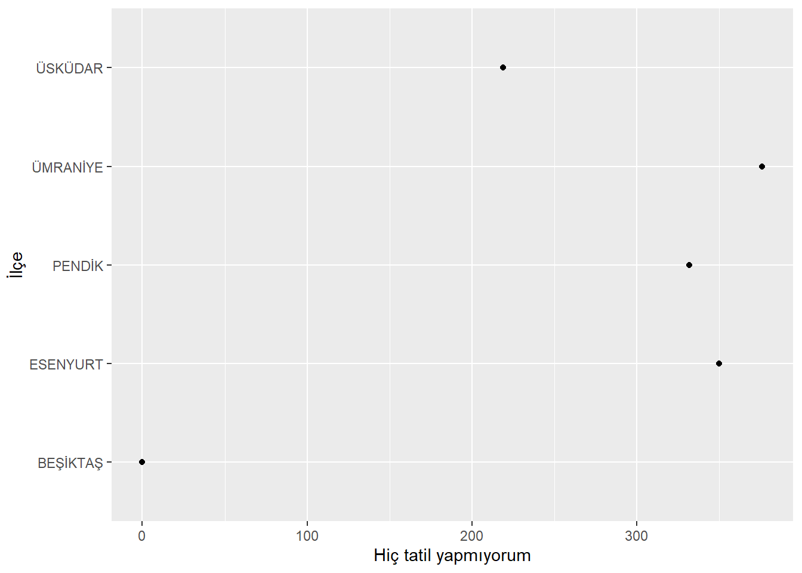
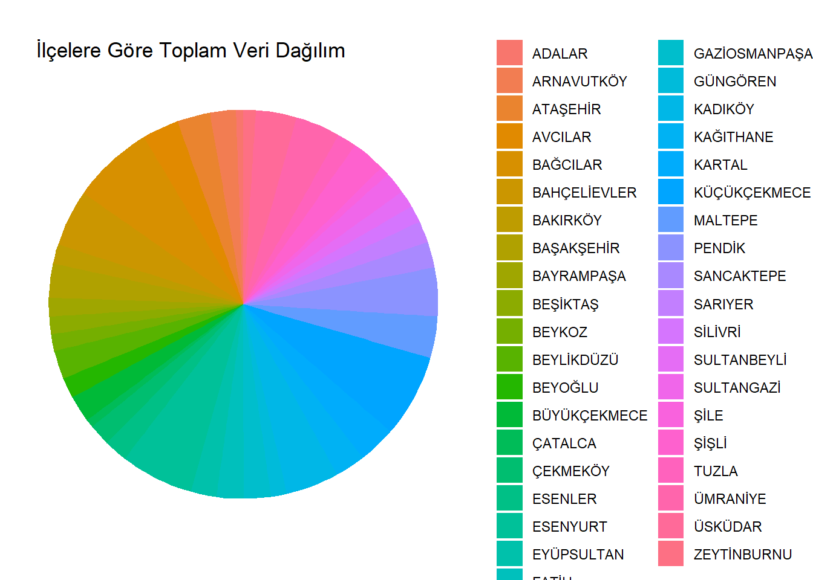
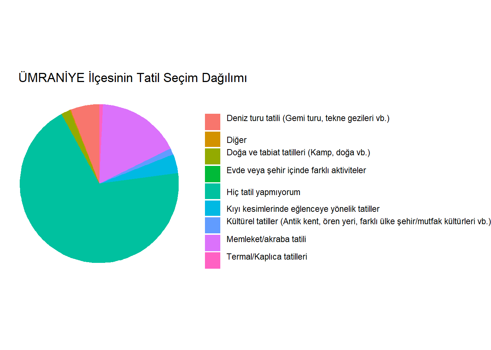
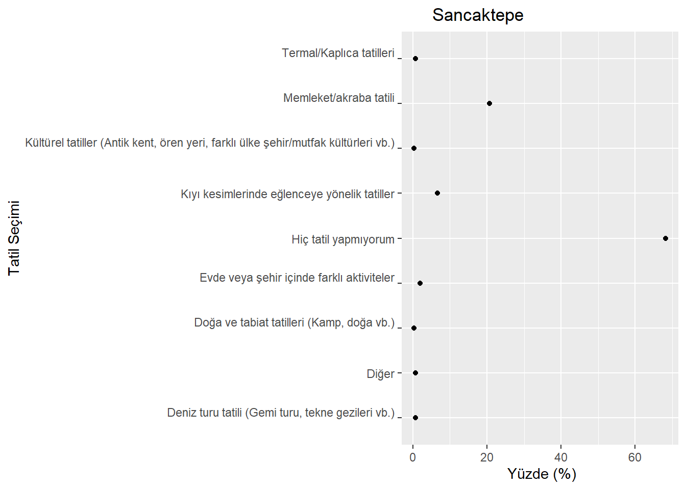
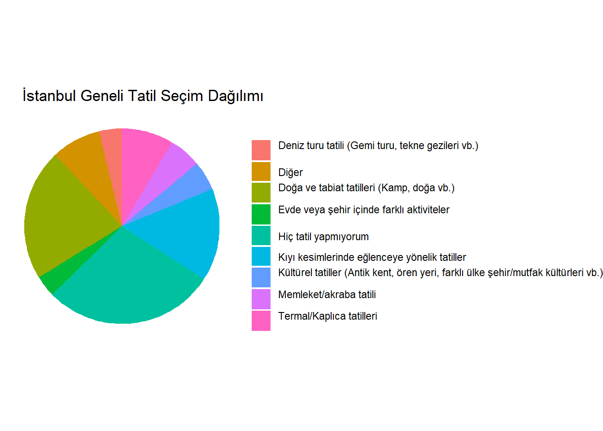
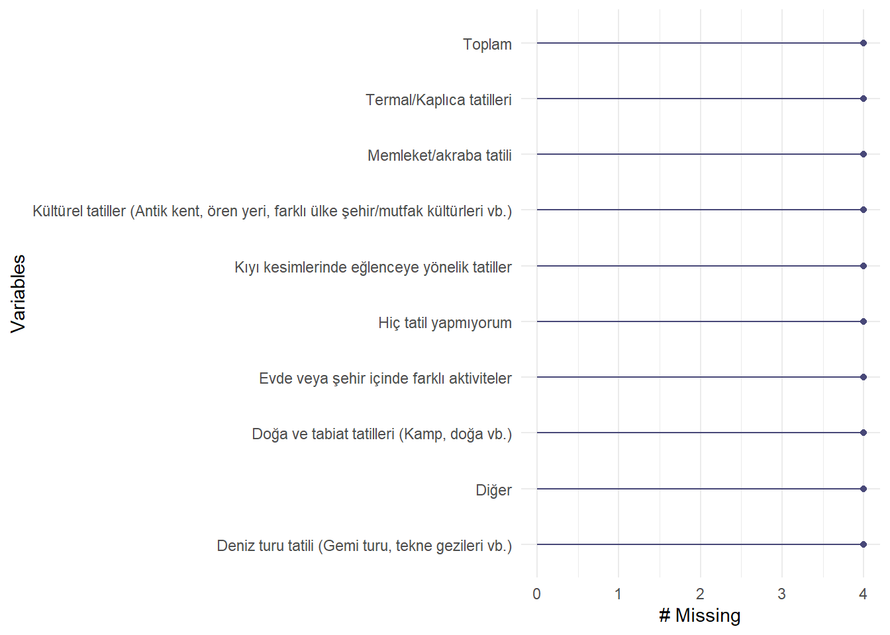
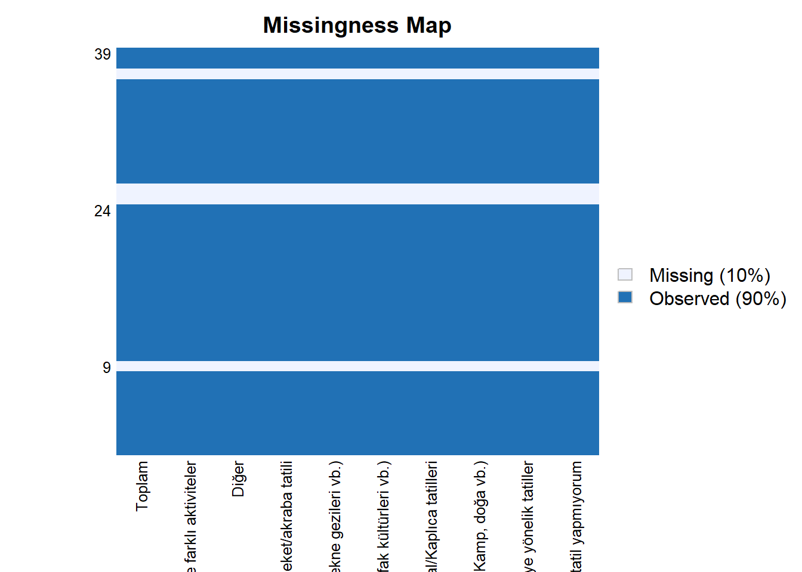

library(dplyr)
Attaching package: 'dplyr'The following objects are masked from 'package:stats':
filter, lagThe following objects are masked from 'package:base':
intersect, setdiff, setequal, unionlibrary(ggplot2)library(dplyr)
Attaching package: 'dplyr'The following objects are masked from 'package:stats':
filter, lagThe following objects are masked from 'package:base':
intersect, setdiff, setequal, unionlibrary(ggplot2)library(readxl)
X7_vdym_ilce_baznda_hanelerin_yllk_tatil_tercihleri <- read_excel("7-vdym-ilce-baznda-hanelerin-yllk-tatil-tercihleri.xlsx")
View(X7_vdym_ilce_baznda_hanelerin_yllk_tatil_tercihleri)Satır- Sutun Sayısı
dim(X7_vdym_ilce_baznda_hanelerin_yllk_tatil_tercihleri)[1] 39 10Veri setinde herhangi bir eksik gözlem yoktur.
any(is.na(X7_vdym_ilce_baznda_hanelerin_yllk_tatil_tercihleri))[1] FALSEÜmraniye`de hiç tatil yapmayanlar
X7_vdym_ilce_baznda_hanelerin_yllk_tatil_tercihleri %>%
select(İlçe,`Hiç tatil yapmıyorum`) %>%
filter(İlçe=="ÜMRANİYE")# A tibble: 1 × 2
İlçe `Hiç tatil yapmıyorum`
<chr> <dbl>
1 ÜMRANİYE 376Tatil_yapmayanın_olmadığı_ilçeler
X7_vdym_ilce_baznda_hanelerin_yllk_tatil_tercihleri %>%
select(İlçe,`Hiç tatil yapmıyorum`) %>%
filter(`Hiç tatil yapmıyorum`==0)# A tibble: 14 × 2
İlçe `Hiç tatil yapmıyorum`
<chr> <dbl>
1 BAKIRKÖY 0
2 BAYRAMPAŞA 0
3 BEŞİKTAŞ 0
4 BEYOĞLU 0
5 ESENLER 0
6 EYÜPSULTAN 0
7 FATİH 0
8 GAZİOSMANPAŞA 0
9 GÜNGÖREN 0
10 KAĞITHANE 0
11 SARIYER 0
12 SULTANGAZİ 0
13 ŞİŞLİ 0
14 ZEYTİNBURNU 0Özet İstatistikler
summary(X7_vdym_ilce_baznda_hanelerin_yllk_tatil_tercihleri) İlçe Hiç tatil yapmıyorum
Length:39 Min. : 0.0
Class :character 1st Qu.: 0.0
Mode :character Median : 75.0
Mean :109.3
3rd Qu.:185.0
Max. :376.0
Kıyı kesimlerinde eğlenceye yönelik tatiller
Min. : 5.00
1st Qu.: 47.00
Median : 79.00
Mean : 81.15
3rd Qu.:111.00
Max. :271.00
Doğa ve tabiat tatilleri (Kamp, doğa vb.) Termal/Kaplıca tatilleri
Min. : 0.00 Min. : 0.00
1st Qu.:13.00 1st Qu.: 6.00
Median :29.00 Median :14.00
Mean :32.21 Mean :17.87
3rd Qu.:41.50 3rd Qu.:24.50
Max. :87.00 Max. :74.00
Kültürel tatiller (Antik kent, ören yeri, farklı ülke şehir/mutfak kültürleri vb.)
Min. : 1.00
1st Qu.: 3.00
Median : 8.00
Mean :14.15
3rd Qu.:15.00
Max. :77.00
Deniz turu tatili (Gemi turu, tekne gezileri vb.) Memleket/akraba tatili
Min. : 0.00 Min. : 2.00
1st Qu.: 6.50 1st Qu.: 14.00
Median : 13.00 Median : 33.00
Mean : 20.05 Mean : 57.28
3rd Qu.: 24.00 3rd Qu.: 80.50
Max. :120.00 Max. :221.00
Diğer Evde veya şehir içinde farklı aktiviteler
Min. : 0.00 Min. : 0.00
1st Qu.: 2.50 1st Qu.: 0.00
Median : 11.00 Median : 4.00
Mean : 29.15 Mean : 14.41
3rd Qu.: 43.00 3rd Qu.: 14.00
Max. :122.00 Max. :122.00 Hiç tatil yapmayan Kişi sayısı
sum(X7_vdym_ilce_baznda_hanelerin_yllk_tatil_tercihleri$`Hiç tatil yapmıyorum`)[1] 4263filtrelenmis_veri <- X7_vdym_ilce_baznda_hanelerin_yllk_tatil_tercihleri %>%
filter(İlçe %in% c("ÜMRANİYE", "ESENYURT","ÜSKÜDAR","BEŞİKTAŞ","PENDİK"))
grafik <- ggplot(filtrelenmis_veri, aes(x=`Hiç tatil yapmıyorum`, y=İlçe))
grafik + geom_point()
İlçe sutunu çıkartıldı ve satır toplamları bulundu
a=X7_vdym_ilce_baznda_hanelerin_yllk_tatil_tercihleri %>%
select(-İlçe)
Toplam_d=rowSums(a)Satır toplamları Toplam sutunu olarak eklendi
a$Toplam<-Toplam_d
a# A tibble: 39 × 10
`Hiç tatil yapmıyorum` Kıyı kesimlerinde eğlenceye y…¹ Doğa ve tabiat tatil…²
<dbl> <dbl> <dbl>
1 74 5 0
2 185 23 33
3 188 76 37
4 138 90 26
5 185 139 52
6 151 75 82
7 0 47 65
8 125 101 40
9 0 68 26
10 0 60 62
# ℹ 29 more rows
# ℹ abbreviated names: ¹`Kıyı kesimlerinde eğlenceye yönelik tatiller`,
# ²`Doğa ve tabiat tatilleri (Kamp, doğa vb.)`
# ℹ 7 more variables: `Termal/Kaplıca tatilleri` <dbl>,
# `Kültürel tatiller (Antik kent, ören yeri, farklı ülke şehir/mutfak kültürleri vb.)` <dbl>,
# `Deniz turu tatili (Gemi turu, tekne gezileri vb.)` <dbl>,
# `Memleket/akraba tatili` <dbl>, Diğer <dbl>, …Toplam gözlem sayısı bulundu
Top_gözlem<-sum(a$Toplam)İlçeler sutunu seçilip geri eklendi
ilçeler=X7_vdym_ilce_baznda_hanelerin_yllk_tatil_tercihleri %>%
select(İlçe)
Top.veri <- cbind(ilçeler,a)İlçelerin toplam içindeki yüzdeleri hesaplandı ve veri setine eklendi
Top.veri$Yüzde<-(Top.veri$Toplam/ Top_gözlem)*100
View(Top.veri)ggplot(Top.veri, aes(x = "", y = Yüzde, fill = İlçe)) +
geom_bar(stat = "identity", width = 1) +
coord_polar(theta = "y") +
theme_void() +
labs(fill = "", title = " İlçelere Göre Toplam Veri Dağılım")
Ümraniye ilçesi tatil seçim yüzdesi
UMRANIYE<-(Top.veri[37,2:10]/Top.veri[37,11])*100Ümraniye için data frame
as.numeric(UMRANIYE[1,])[1] 69.2449355 3.8674033 1.8416206 0.7366483 1.2891344 5.8931860 16.9429098
[8] 0.1841621 0.0000000df <- data.frame(
Kategori = c("Hiç tatil yapmıyorum","Kıyı kesimlerinde eğlenceye yönelik tatiller","Doğa ve tabiat tatilleri (Kamp, doğa vb.)
","Termal/Kaplıca tatilleri
","Kültürel tatiller (Antik kent, ören yeri, farklı ülke şehir/mutfak kültürleri vb.)
","Deniz turu tatili (Gemi turu, tekne gezileri vb.)
","Memleket/akraba tatili
","Diğer","Evde veya şehir içinde farklı aktiviteler
"),
yüzde = c(69.2449355 ,3.8674033 , 1.8416206 , 0.7366483 , 1.2891344, 5.8931860 ,16.9429098 , 0.1841621, 0.0000000)
)ggplot(df, aes(x = "", y = yüzde, fill = Kategori)) +
geom_bar(stat = "identity", width = 1) +
coord_polar(theta = "y") +
theme_void() +
labs(fill = "", title = " ÜMRANİYE İlçesinin Tatil Seçim Dağılımı")
Sancaktepe ilçesi tatil seçim yüzdesi
Sancaktepe<-(Top.veri[29,2:10]/Top.veri[29,11])*100Sancaktepe için data frame
as.numeric(Sancaktepe[1,])[1] 68.2539683 6.6666667 0.3174603 0.6349206 0.3174603 0.6349206 20.6349206
[8] 0.6349206 1.9047619df2 <- data.frame(
Kategori = c("Hiç tatil yapmıyorum","Kıyı kesimlerinde eğlenceye yönelik tatiller","Doğa ve tabiat tatilleri (Kamp, doğa vb.)
","Termal/Kaplıca tatilleri
","Kültürel tatiller (Antik kent, ören yeri, farklı ülke şehir/mutfak kültürleri vb.)
","Deniz turu tatili (Gemi turu, tekne gezileri vb.)
","Memleket/akraba tatili
","Diğer","Evde veya şehir içinde farklı aktiviteler
"),
yüzde = c(68.2539683 , 6.6666667 , 0.3174603 , 0.6349206 , 0.3174603 , 0.6349206 ,20.6349206 , 0.6349206 , 1.9047619)
)ggplot(data = df2, aes(x = yüzde, y = Kategori)) +
geom_point() +
labs(title = " Sancaktepe ", x = " Yüzde (%)", y = "Tatil Seçimi")
Toplam kategori sayıları
g <-sum(a$`Hiç tatil yapmıyorum`)
h<-sum(a$`Memleket/akraba tatili`)
j<-sum(a$`Kıyı kesimlerinde eğlenceye yönelik tatiller`)
k<-sum(a$`Doğa ve tabiat tatilleri (Kamp, doğa vb.)`)
l<-sum(a$`Termal/Kaplıca tatilleri`)
m<-sum(a$`Kültürel tatiller (Antik kent, ören yeri, farklı ülke şehir/mutfak kültürleri vb.)`)
n<-sum(a$`Deniz turu tatili (Gemi turu, tekne gezileri vb.)`)
x<-sum(a$Diğer)
z<-sum(a$`Evde veya şehir içinde farklı aktiviteler`)Toplam gözlem sayısı
Top_gözlem<-sum(a$Toplam)İstanbul geneli yüzdeler
Hiç_tatil_yapmıyorum<-(g/Top_gözlem)*100
Memleket_akraba_tatili<-(h/Top_gözlem)*100
Kıyı_kesımlerınde_eglenceye_yönelik_tatıller<-(j/Top_gözlem)*100
Doğa_ve_tabiat_tatilleri<-(k/Top_gözlem)*100
Termal_Kaplıca_tatilleri<-(l/Top_gözlem)*100
Kültürel_tatiller<-(m/Top_gözlem)*100
Deniz_turu_tatili<-(n/Top_gözlem)*100
Diğer<-(x/Top_gözlem)*100
Evde_veya_şehir_içinde_farklı_aktiviteler<-(z/Top_gözlem)*100df3 <- data.frame(
Kategori = c("Hiç tatil yapmıyorum","Kıyı kesimlerinde eğlenceye yönelik tatiller","Doğa ve tabiat tatilleri (Kamp, doğa vb.)
","Termal/Kaplıca tatilleri
","Kültürel tatiller (Antik kent, ören yeri, farklı ülke şehir/mutfak kültürleri vb.)
","Deniz turu tatili (Gemi turu, tekne gezileri vb.)
","Memleket/akraba tatili
","Diğer","Evde veya şehir içinde farklı aktiviteler
"),
yüzde = c(28.54223 , 15.34911 , 21.84348 , 8.584427 , 4.859234 , 3.797719 ,5.347135 , 8.142678 , 3.560361)
)ggplot(df3, aes(x = "", y = yüzde, fill = Kategori)) +
geom_bar(stat = "identity", width = 1) +
coord_polar(theta = "y") +
theme_void() +
labs(fill = "", title = " İstanbul Geneli Tatil Seçim Dağılımı")
Regresyon analizi
P değeri anlamlı çıksada r kare oldukça düşük anlamsız bir model.
d<-Top.veri$`Memleket/akraba tatili`
f<-Top.veri$Diğer
model<-lm(f~ d)
summary(model)
Call:
lm(formula = f ~ d)
Residuals:
Min 1Q Median 3Q Max
-40.40 -25.02 -16.09 22.51 81.81
Coefficients:
Estimate Std. Error t value Pr(>|t|)
(Intercept) 41.24028 7.90818 5.215 7.25e-06 ***
d -0.21100 0.09835 -2.145 0.0385 *
---
Signif. codes: 0 '***' 0.001 '**' 0.01 '*' 0.05 '.' 0.1 ' ' 1
Residual standard error: 34.66 on 37 degrees of freedom
Multiple R-squared: 0.1106, Adjusted R-squared: 0.08661
F-statistic: 4.603 on 1 and 37 DF, p-value: 0.03855Rastgele verilerin %10 kısmını NA yapma
for (sutun in names(a)) {
set.seed(123)
na_indexes <- sample(1:nrow(a), size = round(0.1 * nrow(a)))
a[na_indexes, sutun] <-NA
}
View(a)Eksik veri olduğunu söyler
any(is.na(a))[1] TRUEEksik değer sayısı
sum(is.na(a))[1] 40library(naniar)
gg_miss_var(a)
library(Amelia)Zorunlu paket yükleniyor: Rcpp##
## Amelia II: Multiple Imputation
## (Version 1.8.1, built: 2022-11-18)
## Copyright (C) 2005-2024 James Honaker, Gary King and Matthew Blackwell
## Refer to http://gking.harvard.edu/amelia/ for more information
## Amelia::missmap(a)Warning: Unknown or uninitialised column: `arguments`.
Unknown or uninitialised column: `arguments`.Warning: Unknown or uninitialised column: `imputations`.
Ortalamaya göre eksik veri doldurma
a <- a %>%
mutate(across(everything(), ~ ifelse(is.na(.), mean(., na.rm = TRUE), .)))Yuvarlama
a<-round(a)Orjinal veri ile karşılaştırdığımızda yöntemin başarılı olduğu söylenebilir.